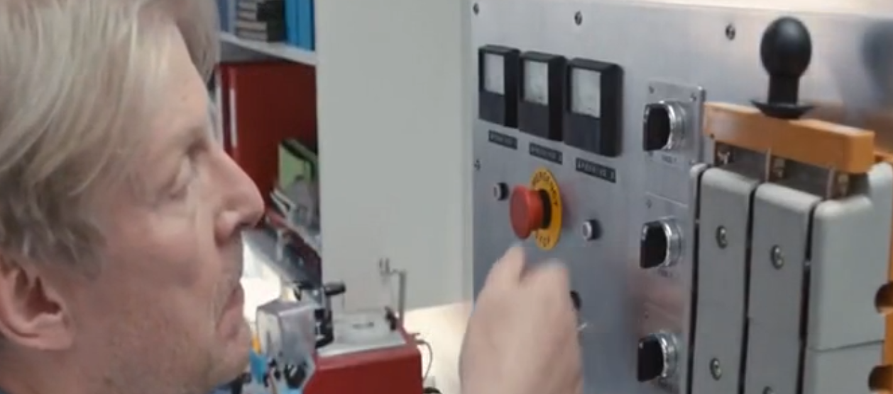

En un mundo en el que el uso abusivo de los recursos agotables, el calentamiento global y la superpoblación están a la orden del día, científicos desarrollan una solución a todos estos problemas que podría hacer perdurar la estancia de la especie humana en el planeta Tierra durante mucho más tiempo del previsto.
La película narra la historia de la vida personal de Paul, un hombre que decide experimentar dicha solución y comprobar si de verdad hace mejorar tanto la vida de la especie humana como la suya misma.
Desde el momento en el que decide reducirse, su vida y la de su mujer cambiará por completo, y Paul tendrá que hacer frente a esta nueva realidad, con una nueva sociedad, un nuevo entorno y nuevas personas en las que confiar. ¿Será todo tan bonito como lo pintan?
Las necesidades son bien claras, y es que lo que se intenta resolver no es ni más ni menos que el problema de la desaparición de la especie humana en el planeta Tierra.
Para ello se lleva a cabo un proceso físico-químico denominado “reducción” en los seres humanos que hacen que una persona encoja su tamaño hasta unos 12 cm de altura aproximadamente, con el objetivo de lograr que algún día toda la humanidad sea así de pequeña y poder reducir las tasas de contaminación, calentamiento global, superpoblación, etc.
La “tecnología” que se ve en esta película es la del proceso físico-químico mediante el que se logra encoger a las personas, denominado “reducción”.
Dicha operación se desarrolla en una especie de “hornos” enormes en los que caben varias personas, las cuales serán sometidas a la vez a dicho cambio.
En el momento de la producción nada de esto existe pues la película se desarrolla en el mundo cotidiano y no es posible llegar a realizar lo que se consigue en dicha película.
El fármaco y el horno que hacen posible tal operación de reducción.
PRIMERA APARICIÓN:
0:01:13 -----> 1º Fármaco experimental
Se utilizó por primera vez en una rata para poder
comprobar
si era posible la reducción.
0:01:25 -----> 1º Horno en el que se probó el experimento

1º Horno en el que se comprobó la reducción con una rata.
0:35:38 -----> 1º aparición en la película del horno para humanos.
Tras ver que dio resultado, posteriormente se probó con humanos.
Este es el horno en el que introducen al protagonista (Paul).
Se consigue en gran parte lo que se buscaba con el fenómeno de la reducción, aunque no tanto como se esperaba, pues aunque al principio mucha gente tomó la decisión de reducirse, finalmente solo el 3% de la población era “pequeña”.
Decimos que se consigue lo que se buscaba porque se demuestra totalmente que es posible llevar una vida con ese tamaño y sobre todo lo que es más importante, que es reducir los problemas como la contaminación, la sobrepoblación, etc.